Special Right Triangles — Practice Set
Bank code: GEO-SPT · Section: Geometry · 30 questions — Easy 7 · Medium 17 · Hard 6
45-45-90 is 1 : 1 : sqrt(2) and 30-60-90 is 1 : sqrt(3) : 2; the hard part is spotting which side you were handed, not the ratio itself.
Every question below is live in the question bank under the ID shown — the sheet and the portal are the same questions. Attempt a level with the clock running, then check Part C.
Part A — Questions
Quantitative Comparison — the four choices are always the same, so they are not reprinted: (A) Quantity A is greater · (B) Quantity B is greater · (C) The two quantities are equal · (D) The relationship cannot be determined from the information given
Level 1 · Easy — 7 questions · ~5 min
warm-up — these must be automatic
Q1 · GEO-SPT-001 · MCQ · 40s
In a 45-45-90 triangle, one leg has length 6. What is the length of the hypotenuse?
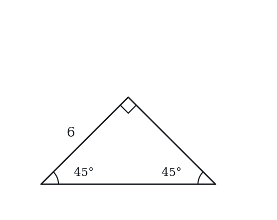
(A) 3√2
(B) 6
(C) 6√2
(D) 6√3
(E) 12
Q2 · GEO-SPT-002 · MCQ · 40s
In a 30-60-90 triangle, the shortest side has length 5. What is the length of the hypotenuse?
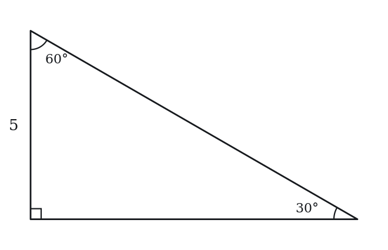
(A) 5
(B) 5√2
(C) 5√3
(D) 10
(E) 15
Q3 · GEO-SPT-005 · MCQ · 45s
In a 30-60-90 triangle, the longer leg has length 9√3. What is the length of the shorter leg?
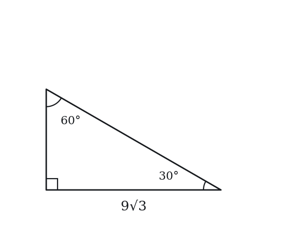
(A) 3√3
(B) 9
(C) 6√3
(D) 9√2
(E) 18
Q4 · GEO-SPT-006 · Numeric Entry · 50s
A square has a diagonal of length 8√2. What is the side length of the square?
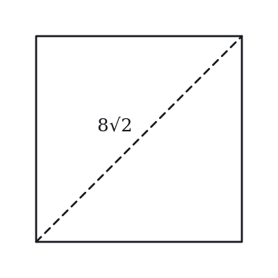
Numeric entry — write the number.
Q5 · GEO-SPT-010 · MCQ · 55s
An equilateral triangle has side length 10. What is its height?
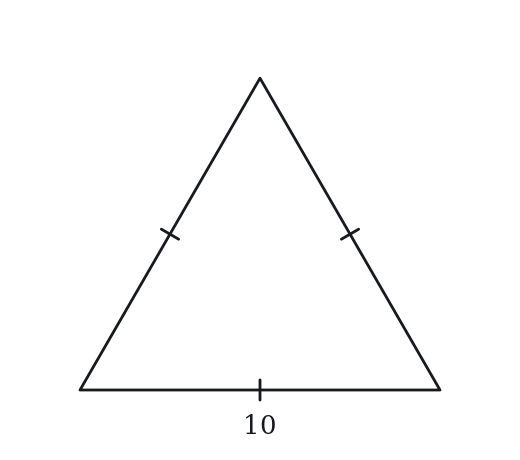
(A) 5
(B) 5√2
(C) 5√3
(D) 10
(E) 10√3
Q6 · GEO-SPT-013 · MCQ · 40s
A square has side length 9. What is the length of its diagonal?
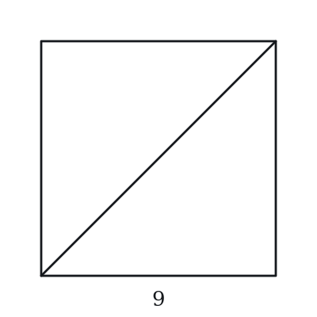
(A) 3√2
(B) 9
(C) 9√2
(D) 9√3
(E) 18
Q7 · GEO-SPT-014 · QC · 55s
In a 30-60-90 triangle with hypotenuse = 12:
Quantity A: The length of the longer leg Quantity B: The length of the shorter leg × 2
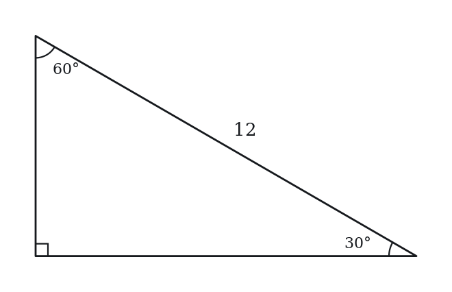
Level 2 · Medium — 17 questions · ~23 min
two or three steps, one planted trap each
Q8 · GEO-SPT-016 · MCQ · 75s
A right triangle has angles of 30°, 60°, and 90°. The perimeter of the triangle is 18 + 6√3. What is the length of the hypotenuse?
(A) 3√3
(B) 6
(C) 9
(D) 6√3
(E) 12
Q9 · GEO-SPT-017 · MCQ · 65s
The area of a 45-45-90 triangle is 32. What is the length of the hypotenuse?
(A) 4
(B) 4√2
(C) 8
(D) 8√2
(E) 16
Q10 · GEO-SPT-018 · MCQ · 70s
The area of an equilateral triangle with side length s is 16√3. What is s?
(A) 4
(B) 4√3
(C) 8
(D) 8√3
(E) 16
Q11 · GEO-SPT-019 · QC · 80s
Triangle A is a 30-60-90 triangle with hypotenuse 10. Triangle B is a 45-45-90 triangle with hypotenuse 10.
Quantity A: The area of Triangle A Quantity B: The area of Triangle B
Q12 · GEO-SPT-020 · Numeric Entry · 80s
A rectangle has a diagonal that makes a 30° angle with the longer side. If the diagonal has length 16, what is the area of the rectangle?
The area equals k√3. Give the value of k.
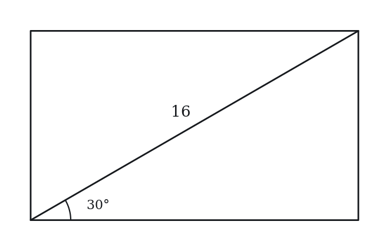
Numeric entry — write the number.
Q13 · GEO-SPT-022 · Select all that apply · 90s
In the right triangle shown, the hypotenuse has length 2k. Which of the following must be true? Indicate all such statements.
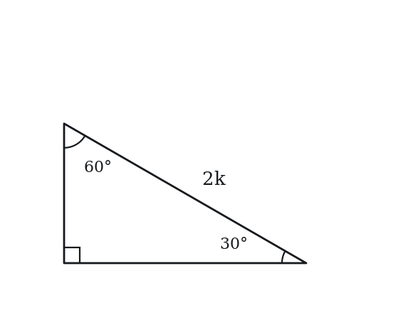
(A) The shorter leg has length k
(B) The longer leg has length k√2
(C) The longer leg has length k√3
(D) The perimeter equals k(3 + √3)
(E) The area equals (k²√3)/2
Q14 · GEO-SPT-024 · QC · 90s
A square has a diagonal of length d. A 30-60-90 triangle has a hypotenuse of length d.
Quantity A: The area of the square Quantity B: The area of the 30-60-90 triangle
Q15 · GEO-SPT-029 · Select all that apply · 85s
A 45-45-90 triangle has hypotenuse h. Which of the following expressions equal the area of the triangle? Select all that apply.
(A) h²/4
(B) (h/√2)²/2
(C) h²√2/4
(D) h²/(2√2)
(E) h²√2/8
Q16 · GEO-SPT-031 · Numeric Entry · 65s
The diagonal of a square is 10. What is the area of the square?
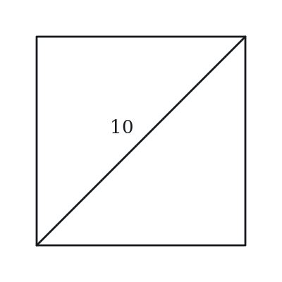
Numeric entry — write the number.
Q17 · GEO-SPT-032 · QC · 75s
An equilateral triangle has side length 6. A 45-45-90 triangle has legs of length 6.
Quantity A: Height of the equilateral triangle Quantity B: Hypotenuse of the 45-45-90 triangle
Q18 · GEO-SPT-033 · MCQ · 85s
Two congruent 30-60-90 triangles are placed together along their hypotenuses to form a rectangle. If the hypotenuse of each triangle is 8, what is the area of the rectangle?
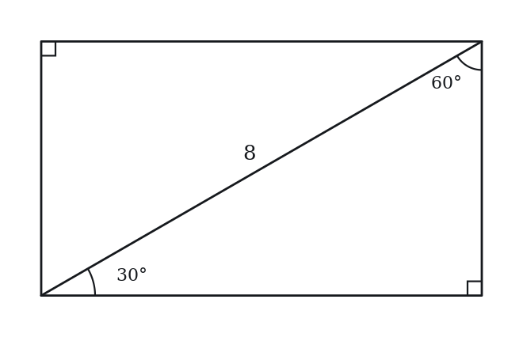
(A) 8√3
(B) 16
(C) 16√2
(D) 16√3
(E) 32
Q19 · GEO-SPT-035 · Numeric Entry · 80s
An equilateral triangle has height 12. The perimeter of the triangle is k√3. What is the value of k?
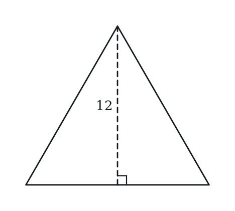
Numeric entry — write the number.
Q20 · GEO-SPT-036 · QC · 90s
In a 30-60-90 triangle, the longer leg = L.
Quantity A: The hypotenuse Quantity B: L√2
Q21 · GEO-SPT-040 · MCQ · 85s
A regular hexagon has side length 6. What is the area of the hexagon?
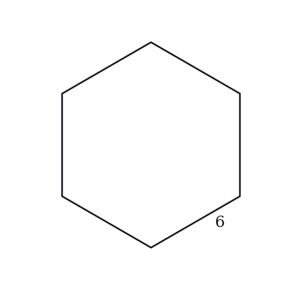
(A) 54
(B) 36√3
(C) 54√3
(D) 108
(E) 108√3
Q22 · GEO-SPT-042 · Numeric Entry · 100s
Two 30-60-90 triangles share a common hypotenuse of length 12, arranged as mirror images across the hypotenuse to form a kite (the hypotenuse becomes an interior diagonal). The area of the kite equals k√3. What is k?
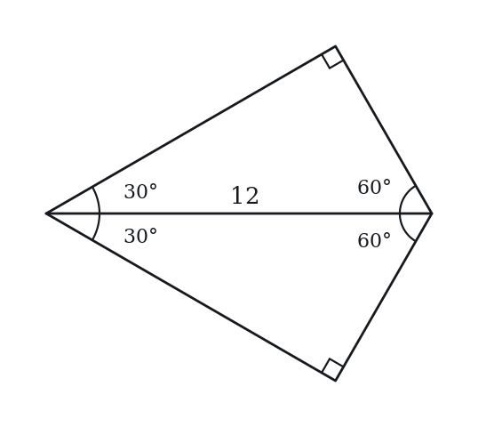
Numeric entry — write the number.
Q23 · GEO-SPT-050 · MCQ · 105s
The altitude from the right angle to the hypotenuse of a 30-60-90 triangle with hypotenuse 4 divides the hypotenuse into two segments. What is the length of the shorter segment?
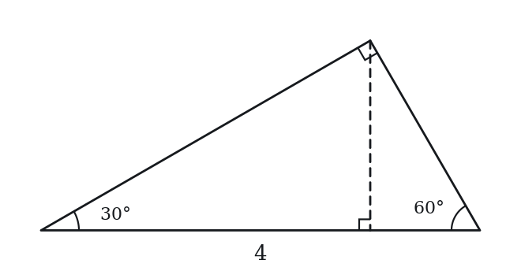
(A) 1/2
(B) 3/4
(C) 1
(D) √3
(E) 2
Q24 · SEC-PG-041 · QC · 85s
ABCD is a square, and AC is one of its diagonals.
Quantity A: (AB + BC)/AC Quantity B: 1.5
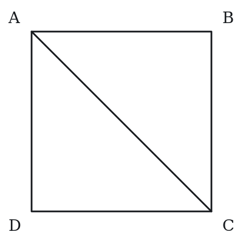
Level 3 · Hard — 6 questions · ~10 min
where 162+ is won or lost
Q25 · GEO-SPT-041 · QC · 95s
The length of a diagonal of a certain square is d, and the length of each side of a certain equilateral triangle is also d.
Quantity A: The area of the square Quantity B: The area of the triangle
Q26 · GEO-SPT-047 · MCQ · 95s
A 30-60-90 triangle is inscribed in a circle. The hypotenuse of the triangle is a diameter of the circle with length 10. What is the area of the region inside the circle but outside the triangle?
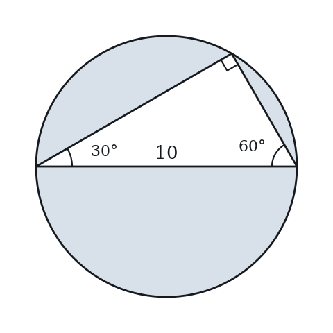
(A) 25π − 25√3
(B) 25π − 12.5√3
(C) 25π − 10√3
(D) 25π − 12.5
(E) 50π − 25√3
Q27 · GEO-SPT-051 · Numeric Entry · 95s
A 30-60-90 triangle has a perimeter of 12 + 4√3. The area of the triangle is k√3, where k is an integer. What is the value of k?
Numeric entry — write the number.
Q28 · GEO-SPT-054 · MCQ · 125s
In triangle ABC, angle B = 90°, angle A = 30°. The altitude from B to the hypotenuse AC meets AC at point D. If AD = 9, what is the area of triangle ABC?
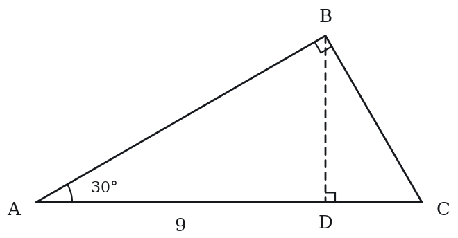
(A) 9√3
(B) 18√3
(C) 27√3
(D) 36√3
(E) 54√3
Q29 · GEO-SPT-KMF-001 · QC · 105s
A circle with center P has radius r. Points X and Y lie on the circle, and the measure of angle XPY is 90 degrees.
Quantity A: The perimeter of triangle XPY Quantity B: 3.4r
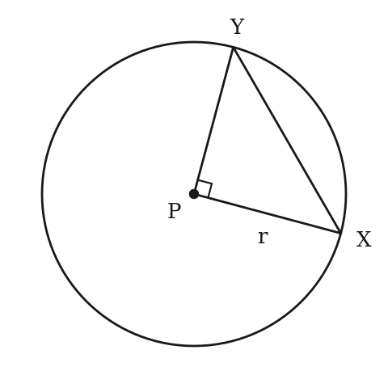
Q30 · GEO-SPT-KMF2-002 · Select all that apply · 105s
In the figure above, angle QPT is a right angle, R lies on PT, and PR = x. Which of the following must be true?
Indicate all such statements.
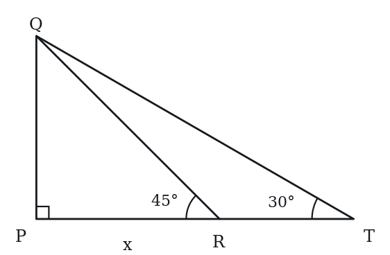
(A) PQ = x
(B) QR = xsqrt(2)
(C) QT = 2x
(D) PT = 2x
(E)* RT = x
The rest of this sheet is part of Pro
All 30 questions, the answer key and full worked solutions with every trap named — plus 75 concept notes and 5,868 questions.